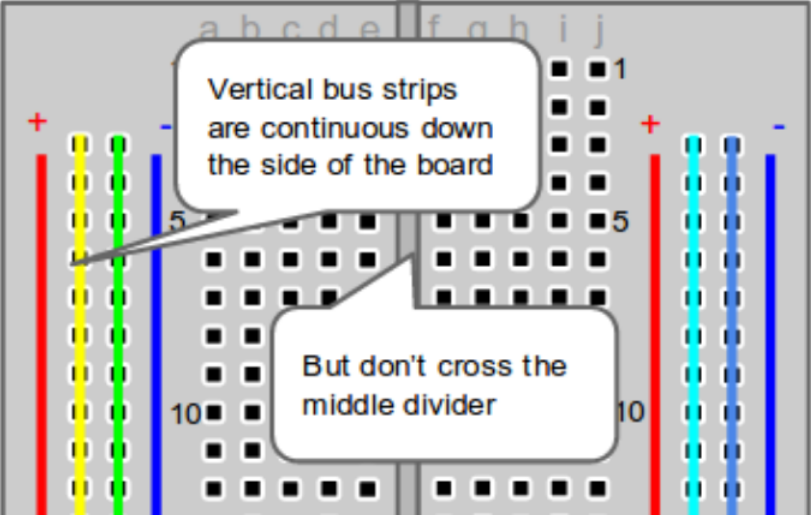
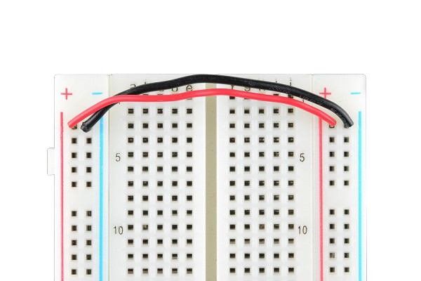
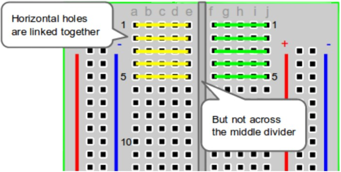
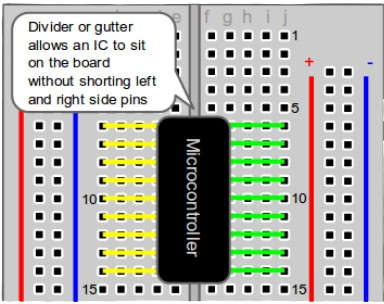
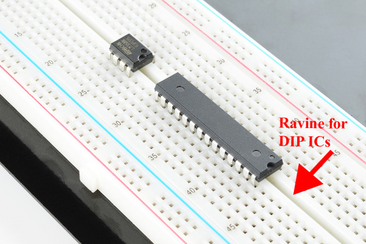

The image you see above, is a breadboard! A breadboard is a tool we use to create electronic circuits, typically in a prototype (meaning temporary) manner. Breadboards don't require any soldering, and allow for components to easily be replaced which allow for great reuseability. If you want to learn more about how breadboards are constructed, feel free to scroll down to the Appendix section.
Now that you know what a breadboard is, let's start by explaining how a breadboard works! First, you'll notice that we have 3 different sections on our breadboard:
1) Power Rails: On the far left and far right, you'll notice red and blue vertical lines. We call these power rails, and connections are made vertically here. It is good practice to keep all positive power sources connected to the "+" rail, and all negative voltage/ground sources connected to the "-" rail. See the image below for a visual explanation of the vertical connections.

Note that the left-most and the right-most power rails are NOT connected meaning in order to share the power sources between the two rails, you will have to attach some sort of wire to connect them like so:

2) Horizontal Rows + Vertical Columns: Right next to our power rails, you'll notice vertical columns labeled a, b, c..., and horizontal rows labeled as 1, 5, 10..., and so on. These are the areas where you will mainly place your components! These horizontal rows are connected horizontally as opposed to the vertical connections that are on the power rails. Be warned that the middle divider divides sections of the horizontal rows, meaning they will not be connected! See the image below for a visual explanation of this.

3) Middle Divider/DIP Support: The last section is the middle divider! It sits between the horizontal rows and stops any connections from continuing on from vertical column e, to vertical column f. The main purpose of this section is to provide a spot to place integrated circuit components, IC for short. See the images below for a visual explanation + example of this.

